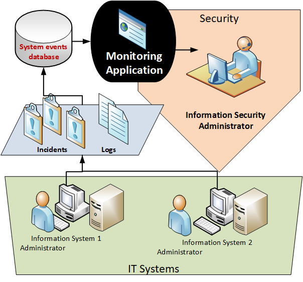

WABSI project
WABSI: Log-analytics based decision support for IT system security
WABSI (in Polish: Wspomaganie Audytu Bezpieczenstwa Systemow Informatycznych) implements an idea of organizational-wide and cross-system event log analytics to provide a comprehensive overview of information security compliance. Intelligent processing techniques based on anomaly detection result in alerting of insider threats and malicious activity. The journal publication describing analysis, design, and data warehousing-based reports is available at Decision support system for information systems security audit (WABSI) as a component of IT infrastructure management (2016). The recent developments on incorporating machine/deep learning models for anomaly detection within the system will appear in Springer's Computer Crime series book, in 2021.